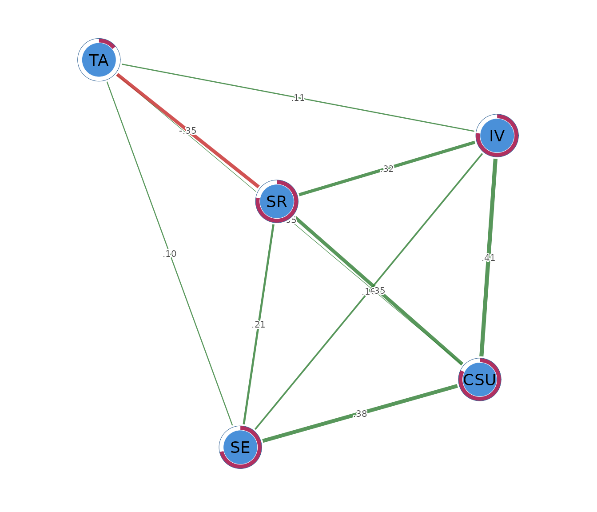

Gaussian graphical models: estimation and interpretation
Source:vignettes/gaussian-graphical-models.Rmd
gaussian-graphical-models.RmdWhat a Gaussian graphical model is
A Gaussian graphical model represents the conditional dependence structure of a set of continuous variables. Each node corresponds to an observed variable, and each edge represents the partial correlation between two variables after conditioning on every other variable in the network. The graph is undirected because partial correlations are symmetric; the association between variables (i) and (j) is identical to that between (j) and (i).
The objective of a Gaussian graphical model is to determine whether two variables remain associated after the influence of all other measured variables has been removed. Consider a network containing motivation, academic achievement, prior achievement, study effort, self-efficacy, and test anxiety. An edge between motivation and academic achievement indicates that these variables remain conditionally associated after accounting for prior achievement, study effort, self-efficacy, and test anxiety. The edge therefore represents the component of their relationship that cannot be explained by the remaining variables included in the model.
Conversely, the absence of an edge indicates that the model does not retain a unique conditional association between the two variables after adjustment for the remaining variables. Their marginal correlation may nevertheless be substantial. For example, the observed association between motivation and academic achievement may be explained through their relationships with study effort, self-efficacy, or prior achievement. Gaussian graphical models distinguish these indirect pathways from associations that remain after statistical adjustment for all other variables.
During estimation, weak conditional associations that are consistent with sampling variability are removed, producing a sparse representation of the conditional dependence structure. Consequently, a missing edge should not be interpreted as evidence that two variables are universally unrelated, but rather that the observed data do not provide sufficient evidence for a direct conditional association under the fitted model. Likewise, the presence of an edge indicates statistical dependence conditional on the measured variables and should not be interpreted as evidence of a causal relationship.
In psychnets, Gaussian graphical models are implemented as a clean-room reimplementation in base R. Both the statistical estimator and the numerical optimization algorithm are implemented directly in R from first principles, without invoking compiled Fortran or C/C++ optimization libraries or external estimation packages. This implementation provides complete transparency of the estimation procedure while reproducing the established Gaussian graphical model methodology.
The data
The worked example uses SRL_GPT, a data frame supplied
with psychnets. It contains 300 observations on five
construct scores from a self-regulated learning questionnaire. Cognitive
strategy use (CSU), intrinsic value (IV),
self-efficacy (SE), self-regulation (SR), and
test anxiety (TA) are means of item responses recorded on a
1 to 7 scale.
head(SRL_GPT)
#> CSU IV SE SR TA
#> 1 5.307692 5.666667 5.777778 5.333333 4.00
#> 2 5.846154 6.444444 6.000000 5.777778 4.00
#> 3 6.615385 6.666667 6.222222 6.333333 3.25
#> 4 5.692308 6.555556 6.333333 5.555556 4.50
#> 5 4.384615 5.555556 4.888889 4.777778 4.00
#> 6 4.846154 5.444444 5.666667 5.111111 3.50Rows are observations and columns are network nodes. The analysis treats the five scale scores as continuous variables. This treatment is most defensible when each score aggregates several items and has enough distinct values to approximate a continuous distribution. Item-level ordinal data may require an ordinal correlation estimator, discussed under sensitivity analysis.
Before fitting a network, a scientific analysis should also examine missingness, univariate distributions, unusual observations, and the effective sample size. The current data are complete. The default estimator therefore uses the same 300 observations for every pairwise correlation.
Fitting the network with psychnet()
psychnet() estimates a network from a numeric table and
returns a fitted psychnet object. The argument
method = "glasso" requests an EBIC-regularized Gaussian
graphical model. The default settings use Pearson correlations,
pairwise-complete handling of missing values,
,
and the package’s native graphical-lasso solver.
net <- psychnet(data = SRL_GPT, method = "glasso")
net
#> <psychnet> glasso network
#> nodes: 5 edges: 10 (undirected)
#> lambda: 0.00861 gamma: 0.5
#> optimality (KKT residual): 2.21e-10The printed object reports 5 nodes and 10 retained edges. The selected penalty is at . All possible pairs are retained in this small example, although several estimated edges are weak. The selected penalty and the observed data determine the degree of sparsity in each fitted network.
Inspecting edges with summary()
summary() prints the fitted model and returns its edge
table invisibly. The table contains the columns from,
to, and weight. Each row identifies a retained
pair of nodes and its estimated partial correlation.
summary(net)
#> <psychnet> glasso network
#> nodes: 5 edges: 10 (undirected)
#> lambda: 0.00861 gamma: 0.5
#> optimality (KKT residual): 2.21e-10
#> edge weight: range [-0.350, 0.412], mean 0.174The edge weights range from -0.350 to 0.412, with a mean of 0.174
across the 10 retained edges. The positive
CSU-IV edge is the largest positive
conditional association
().
Cognitive strategy use and intrinsic value remain positively associated
after adjustment for self-efficacy, self-regulation, and test
anxiety.
The SR-TA edge is negative
().
Higher self-regulation is associated with lower test anxiety among
observations with comparable values on the other three constructs. The
edges from TA to CSU
(),
SE
(),
and IV
()
are small. Their magnitudes support only cautious substantive
interpretation. None of these conditional associations identifies a
causal effect.
Checking numerical optimality with certificate()
certificate() reports how closely a fitted estimator
satisfies the defining conditions of its optimization problem. For a
graphical-lasso fit, the returned data frame has the columns
method, certificate, kind, and
certified. The certificate value is the
maximum violation of the Karush-Kuhn-Tucker (KKT) stationarity
conditions. The kind value is "kkt", and
certified records whether the residual is at or below the
requested tolerance of
by default.
certificate(net)
#> method certificate kind certified
#> 1 glasso 2.213387e-10 kkt TRUEThe KKT residual is
and certified is TRUE. This residual is close
to machine precision. It indicates that the estimated precision matrix
satisfies the first-order conditions of the selected convex objective to
numerical precision. The certificate assesses numerical optimization. It
does not assess the Gaussian assumption, the substantive validity of the
variables, sampling uncertainty, or causal identification.
Describing node position with net_centralities()
net_centralities() computes node-level summaries from
the fitted weighted graph. Its default return is a tidy data frame with
the columns node, strength, and
expected_influence. Strength is the sum of the absolute
edge weights incident on a node. Expected influence is the sum of the
signed edge weights, so negative and positive relations can offset one
another.
net_centralities(net)
#> node strength expected_influence
#> 1 CSU 1.1984512 1.19845117
#> 2 IV 1.0012765 1.00127649
#> 3 SE 0.8492185 0.84921854
#> 4 SR 1.2314317 0.53172852
#> 5 TA 0.6082238 -0.09147935Self-regulation has the largest strength (1.231), followed by cognitive strategy use (1.198). Self-regulation combines several positive connections with the negative connection to test anxiety. Its expected influence is therefore 0.532, which is lower than its strength. Cognitive strategy use has only positive estimated edges, so its strength and expected influence are both 1.198.
Test anxiety has strength 0.608 and expected influence -0.091. Its negative edge with self-regulation offsets its three small positive edges. This example shows why the two indices answer different questions. Strength quantifies total absolute connection, whereas expected influence retains the direction of each relation. Centrality is a descriptive property of the estimated graph. A high value does not identify a variable as a cause or an intervention target.
Quantifying node predictability with net_predict()
net_predict() reports how well every node is predicted
by the other nodes in a fitted network. For a Gaussian graphical model,
it computes the proportion of variance explained,
,
directly from the precision and covariance matrices. The returned data
frame has the columns node, type,
metric, predictability, and
accuracy. The Gaussian rows use
type = "gaussian", metric = "R2", and
accuracy = NA because classification accuracy does not
apply to continuous nodes.
net_predict(net)
#> node type metric predictability accuracy
#> 1 CSU gaussian R2 0.8217840 NA
#> 2 IV gaussian R2 0.7690346 NA
#> 3 SE gaussian R2 0.7142811 NA
#> 4 SR gaussian R2 0.7786477 NA
#> 5 TA gaussian R2 0.1421163 NACognitive strategy use has the largest predictability, with . Self-regulation (), intrinsic value (), and self-efficacy () are also strongly explained by their remaining nodes in this fitted model. Test anxiety has , so the other four constructs account for a much smaller proportion of its variance.
Predictability complements centrality. Centrality summarizes how a node is connected, while predictability quantifies how much of its variance is accounted for by the other nodes. Predictability remains an in-sample model quantity in this analysis. It should not be read as out-of-sample predictive performance without a separate validation design.
Visualizing the fitted network with
cograph::splot()
cograph::splot() draws the fitted object as a network
when the optional cograph package is available. The
argument psych_styling = TRUE uses green edges for positive
weights, red edges for negative weights, and node rings for the stored
predictability values.
cograph::splot(net, psych_styling = TRUE)
The figure is a compact representation of the edge table. Edge colour encodes sign and edge width encodes magnitude. Node position is determined by a layout algorithm and has no direct statistical scale. Visual distance between two nodes must therefore not be interpreted as an estimated association. Numerical interpretation should return to the edge table and node-level summaries.
Sensitivity to the correlation estimator
Analytic choices can affect weak edges. A sensitivity analysis
changes one choice at a time and compares the resulting model with the
primary fit. psychnet() accepts
cor_method = "spearman" for a rank-based analysis. Spearman
correlations reduce sensitivity to monotone transformations and extreme
values, although they answer a rank-association version of the research
question.
spearman_net <- psychnet(data = SRL_GPT, method = "glasso", cor_method = "spearman")
spearman_net
#> <psychnet> glasso network
#> nodes: 5 edges: 9 (undirected)
#> lambda: 0.01882 gamma: 0.5
#> optimality (KKT residual): 2.67e-10
summary(spearman_net)
#> <psychnet> glasso network
#> nodes: 5 edges: 9 (undirected)
#> lambda: 0.01882 gamma: 0.5
#> optimality (KKT residual): 2.67e-10
#> edge weight: range [-0.237, 0.424], mean 0.192The Spearman analysis retains 9 edges and selects
.
The main pattern remains: the four learning constructs are positively
connected and the SR-TA edge is negative. The
weak CSU-TA edge is absent, and the
SR-TA estimate changes from -0.350 to -0.237.
The persistence of the main pattern provides evidence that its
qualitative interpretation is not specific to Pearson correlations. The
changes in weaker edges indicate sensitivity in that part of the
graph.
For item-level ordinal variables, cor_method = "auto"
can estimate polychoric or polyserial associations where appropriate.
The measurement scale should determine this choice before the network
results are examined.
Applying a substantive edge threshold
psychnet() can apply an absolute post-estimation
threshold through its threshold argument. A threshold is a
reporting or sparsification choice. It does not change the penalty
selected by EBIC, and it should be justified before examining the final
graph.
threshold_net <- psychnet(data = SRL_GPT, method = "glasso", threshold = 0.1)
threshold_net
#> <psychnet> glasso network
#> nodes: 5 edges: 8 (undirected)
#> lambda: 0.00861 gamma: 0.5
#> optimality (KKT residual): 2.21e-10
summary(threshold_net)
#> <psychnet> glasso network
#> nodes: 5 edges: 8 (undirected)
#> lambda: 0.00861 gamma: 0.5
#> optimality (KKT residual): 2.21e-10
#> edge weight: range [-0.350, 0.412], mean 0.200At a threshold of 0.10, the graph contains 8 edges. The
CSU-TA estimate (0.049) and the
SE-TA estimate (0.099) are removed. The
selected penalty and KKT residual are unchanged because thresholding
occurs after estimation. A threshold can make a graph easier to read,
but it must not be presented as a model-selection result from EBIC.
A nonparanormal sensitivity model
The Gaussian graphical model assumes joint normality for its exact
probabilistic interpretation. psychnet() fits a rank-based
nonparanormal model with method = "huge". This method
estimates monotone marginal transformations and then applies the same
EBIC graphical-lasso procedure to the transformed correlation matrix.
Its purpose is to relax strict marginal normality while retaining a
Gaussian conditional-dependence model on the transformed scale.
npn_net <- psychnet(data = SRL_GPT, method = "huge")
npn_net
#> <psychnet> huge network
#> nodes: 5 edges: 10 (undirected)
#> lambda: 0.008559 gamma: 0.5
#> optimality (KKT residual): 2.47e-10
summary(npn_net)
#> <psychnet> huge network
#> nodes: 5 edges: 10 (undirected)
#> lambda: 0.008559 gamma: 0.5
#> optimality (KKT residual): 2.47e-10
#> edge weight: range [-0.343, 0.426], mean 0.172The nonparanormal model retains all 10 edges. Its weights range from
-0.343 to 0.426. The positive cluster among the four learning constructs
and the negative SR-TA edge remain. The
weakest CSU-TA edge decreases from 0.049 to
0.024, which again marks this edge as sensitive to the correlation
model.
certificate(npn_net)
#> method certificate kind certified
#> 1 huge 2.471392e-10 kkt TRUEThe KKT residual is
and certified is TRUE. The optimization
therefore satisfies its first-order conditions to numerical precision on
the transformed correlation matrix. This result checks the solver, while
the scientific adequacy of the nonparanormal model remains a modeling
judgment.
Reporting the analysis
A complete report should identify the variables and their measurement scale, the sample size, the correlation estimator, the missing-data procedure, the network estimator, the EBIC value of , and any post-estimation threshold. It should report the edge weights numerically and distinguish conditional association from causation. Centrality and predictability should be defined before their values are interpreted.
The present analysis used Pearson correlations and an EBIC graphical lasso with on 300 complete observations. The selected model had 5 nodes, 10 edges, and . Its KKT residual was . The largest positive edge joined cognitive strategy use and intrinsic value (), and the largest negative edge joined self-regulation and test anxiety (). Rank-based and nonparanormal sensitivity models preserved the main qualitative pattern but changed some weak edges.
Why the model removes weak connections
The graphical lasso filters small connections so that the fitted network focuses on associations with enough unique information to be retained. This filtering is useful because a sample can contain many negligible correlations produced by ordinary sampling variation. Keeping every one of them would make the network harder to read and could give weak, noisy connections more attention than their magnitudes justify.
The amount of filtering is selected from the data.
psychnets fits networks across a sequence of penalty values
and uses the extended Bayesian information criterion (EBIC) to balance
fit with the number of retained edges. The hyperparameter
controls how strongly EBIC favours a simpler network. Larger values
generally retain fewer edges.
This procedure explains how the graph was simplified. It does not make the retained edges causal, and it does not show that every removed edge is exactly zero in the population. Weak edges may change across samples or analytic choices, which is why the Spearman and nonparanormal examples above are useful.
Mathematical foundations
This section states the model, estimator, selection criterion, and numerical diagnostic precisely. The worked example can be understood without these derivations.
Precision matrix and conditional independence
Let follow a multivariate normal distribution with mean vector and positive-definite covariance matrix . The precision matrix is . For distinct nodes and ,
Zeros in the precision matrix therefore define the missing edges of the population graph. The partial correlation associated with a retained edge is
This standardization places conditional associations on the correlation scale, from -1 to 1.
Penalized likelihood
Let be the sample covariance or correlation matrix. The graphical lasso estimates a positive-definite precision matrix by minimizing
The tuning parameter controls the amount of regularization. Larger values impose more shrinkage on off-diagonal precision entries and usually produce fewer edges. The objective is strictly convex over the cone of positive-definite matrices, so its minimizer is unique.
EBIC model selection
For each candidate value of , the fitted graph has a Gaussian log-likelihood and retained edges. The EBIC is
where
is the sample size,
is the number of nodes, and
controls the additional graph-complexity penalty. psychnets
evaluates a logarithmically spaced path of candidate penalties and
selects the value with the smallest EBIC. The selected penalty is then
refitted at a tighter numerical tolerance.
KKT optimality conditions
Write . At the optimum, the diagonal conditions satisfy . For off-diagonal entries,
and
certificate() returns the maximum violation of these
conditions. A residual near zero indicates that the numerical solution
satisfies the defining first-order conditions to numerical
precision.
Predictability from the precision matrix
For node , the conditional residual variance is . If is the marginal variance, the proportion of variance explained by the remaining nodes is
net_predict() evaluates this identity for each node. The
calculation requires the fitted precision and covariance matrices, so
raw observations are not needed after a Gaussian graphical model has
been fitted.